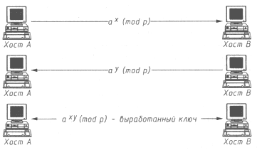

АТАКА НА INTERNET
Рассмотрим вопрос создания виртуальных каналов как средства обеспечения дополнительной идентификации и аутентификации объектов в распределенной ВС. Ранее рассматривались наиболее безопасные варианты физического построения сети, однако подобных мер явно недостаточно для создания защищенного взаимодействия удаленных объектов, так как, во-первых, обеспечить взаимодействие всех объектов по выделенному каналу на практике очень сложно и, во-вторых, нельзя не предусмотреть вариант физического подключения к каналу. Следовательно, разработчик защищенной РВС должен исходить из принципа возможного перехвата передаваемых по каналу связи сообщений.
| При разработке принципов защищенного взаимодействия объектов распределенной ВС необходимо исходить из того, что все сообщения, передаваемые по каналу связи, могут быть перехвачены, но это не должно нарушить безопасность системы в целом. |
Таким образом, данное утверждение накладывает на разработчика следующие требования: необходимо ввести дополнительные средства идентификации объектов в распределенной ВС и установить криптозащиту передаваемых по каналу связи сообщений. Ранее уже отмечалось, что идентификация объектов РВС в отсутствии статической ключевой информации возможна лишь при взаимодействии объектов с использованием виртуального канала. В дальнейшем рассматривается только распределенная ВС, у объектов которой отсутствует ключевая информация для связи друг с другом, - в подобной системе решить задачу безопасного взаимодействия несколько сложнее. Следовательно, чтобы ликвидировать причину успеха удаленных атак, а также исходя из только что сформулированного утверждения, необходимо руководствоваться правилом, регламентирующим осуществление всех взаимодействий в ВС по виртуальному каналу связи.
| Любое, сколь угодно критичное взаимодействие двух объектов в распределенной ВС должно проходить по виртуальному каналу связи. |
Рассмотрим, как в РВС виртуальный канал связи (ВК) может использоваться для надежной, независимой от топологии и физической организации системы идентификации удаленных объектов.
Для этого при создании ВК могут использоваться криптоалгоритмы с открытым ключом (например, недавно принятый в Internet стандарт защиты ВК, называемый Secure Socket Layer (SSL). Данные криптоалгоритмы основаны на результатах исследований, полученных в 70-х годах У. Диффи. Он ввел понятие односторонней функции с потайным входом. Это не просто вычисляемая в одну сторону функция, обращение которой невозможно, она содержит trapdoor (потайной вход), позволяющий вычислять обратную функцию лицу, знающему секретный ключ. Суть криптографии с открытым ключом (или двухключевой криптографии) в том, что ключи, имеющиеся в криптосистеме, входят в нее парами, и каждая пара удовлетворяет следующим двум свойствам:
- Текст, зашифрованный на одном ключе, может быть дешифрован на другом.
- Знание одного ключа не позволяет вычислить другой.
Поэтому один из ключей может быть опубликован. При открытом ключе шифрования и секретном ключе дешифрования получается система шифрования с открытым ключом. Каждый пользователь сети может зашифровать сообщение с помощью открытого ключа, а расшифровать его сможет только владелец секретного ключа. При опубликовании ключа дешифрования получается система цифровой подписи. Здесь только владелец секретного ключа создания подписи может правильно зашифровать текст (то есть подписать его), а проверить подпись (дешифровать текст) может любой на основании опубликованного ключа проверки подписи.
В 1976 г. У. Диффи и М. Хеллман предложили следующий метод открытого распределения ключей. Пусть два объекта А и В условились о выборе в качестве общей начальной информации большого простого числа р и примитивного корня степени р-1 из 1 в поле вычетов по модулю р. Тогда эти пользователи действуют в соответствии с нижеприведенным протоколом (рис. 7.4):

Рис. 7.4. Алгоритм открытого распределения ключей
- А вырабатывает случайное число х, вычисляет число ax (mod р) и посылает его В.
- В вырабатывает случайное число у, вычисляет число ay (mod р) и посылает его А.
- Затем А и В возводят полученное число в степень со своим показателем и получают число axy (mod р).
Это число и является сеансовым ключом для одноключевого алгоритма, например DES. Для раскрытия этого ключа криптоаналитику необходимо по известным ax (mod р) и ay (mod р) найти axy (mod р), то есть х или у. Нахождение числа х по его экспоненте ax (mod р) называется задачей дискретного логарифмирования в простом поле. Эта задача труднорешаема, и поэтому полученный ключ может быть стойким [7].
Особенность данного криптоалгоритма состоит в том, что перехват по каналу связи пересылаемых в процессе создания виртуального канала сообщений ax (mod p) и ay (mod p) не позволит атакующему получить конечный ключ шифрования аxy (mod р). Далее этот ключ должен использоваться, во-первых, для цифровой подписи сообщений и, во-вторых, для их криптозащиты. Цифровая подпись сообщений позволяет надежно идентифицировать объект распределенной ВС и виртуальный канал. В завершение сформулируем следующий принцип защищенного взаимодействия объектов РВС.
| Чтобы обеспечить надежную идентификацию объектов распределенной ВС при создании виртуального канала, необходимо использовать криптоалгоритмы с открытым ключом. |
|
|
|
|
| « | » |